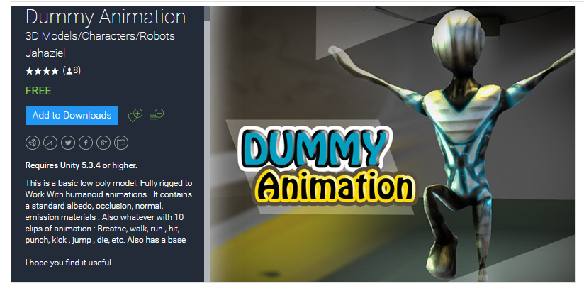

The SDX Animation Module allows you to add in your own unique creatures and characters into the world, without relying on in-game animation calls.
This tutorial will guide you on downloading an asset from the Unity store, and converting it into an in-game creature. Some of the steps we will be doing will be similar to adding in a block, but there's some big differences as well.
The following Tutorials are highly recommend to be done before doing this:
Video Tutorials - Xyth's second tutorial on adding assets to unity
But we can still have fun with it :)
There are a lot of assets on the Unity store that will look great in game, while others may be fine for your unique vision of the game. Here's a few things to look for.
Typically, any 3D Model will work with this SDX Animation Module. For a full easy experience, you'll want to look for assets with added animations, such as:

Note, in the description, it says there's "10 clips of animations, and lists them.
Depending on your end goals, you'll want to have animations that can be used for the following tasks:
Attack
Die
Jump
Run
Walk
Idle
Pain
With the SDX Animation module, you can have 2 different attacks, in addition to a special attack that gets randomly called. Idle can also have two separate animations that get called. These extras are optional, as is most of the animations types listed above. However, to make them feel part of the world, you'll want those basics covered.
If you are comfortable with Unity and animations, you can add in your own custom animations. For this tutorial, however, we are going to be looking for assets that already come with animations.
Created with the Personal Edition of HelpNDoc: Free EPub and documentation generator